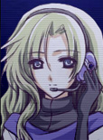

シルフドラグーン ゼロ アーカイブページ
【紹介動画】 コメントも見たい方は ニコニコ動画版 をどうぞ
|
【タイトル】
シルフドラグーン ゼロ
【ジャンル】
シューティングゲーム
（マウス・キーボード併用）
【対応OS】
Windows2000/XP/
Vista/7～以降
【開発ツール】
WOLF RPGエディター
【プレイ時間】
1～2時間前後
|
【ダウンロード】
【シルフドラグーンゼロのダウンロード】
( Zip形式 26MB / GitHubから直接ダウンロード）
修正内容 2010/05/27 Ver1.09が公開されました
◆戦闘中、文字が一部右からはみ出している部分があったのを修正[ver1.09]
◆ギガントとエストックを強化 ＆ 武器のバランスを調整 [ver1.07]
◆誤字を修正 [ver1.06・ver1.07]
◆レベル1000以降でEscキーからミッション中断すると、
次に出撃したとき表示がおかしくなるバグを修正 [ver1.04]
◆Escから「ミッション」を中断するとスコアが戻らないバグを修正 [ver1.03]
◆敵と相打ちになるとMissionFailure画面にならずそのまま続行されるバグを修正 [ver1.02]
◆最終ステージの消費コストとダメージが評価に加算されていなかったバグを修正
[ver1.02]
◆リミットブレーカーがスラスターにも有効になりました [ver1.01] |
【ストーリー】
2422年、外星系から流れ着いたMIDASナノマシンにより、
地球は一面、灰色の星へと変貌した。
MIDASはその後、地球軍兵器のクローンを生み出し、
月面上空さえも灰色の機体で埋め尽くした。
それから絶望の百年が過ぎた後、人類は、
外星系に安寧の地を探し求めるニューフロンティア派と、
MIDASからの地球奪還を目指すマザーアース派に分かれた。
これは、マザーアース派の補給艦「アトランティス号」と共に作戦を行う、
あるドラグーンパイロットの、戦いの記録である。
※ドラグーン
外星系の遺失技術を一部復元・利用して作られた航宙戦闘機。
かつて太陽系戦争で用いられていたが、対MIDAS戦に最適な性能を備えていたため、
今や対MIDASにおける基本兵器となっている。乗り手が極めて少ないのが欠点。
【基本操作】
このゲームは、セットアップ画面では「マウス」で、
ミッション中は「キーボード＋マウス」で操作します。
|
【タイトル画面・セットアップ中の操作】
◆マウス左クリック
決定する / 機体や強化値を変更
◆マウス右クリック
キャンセルする
|
|
 |
【ミッション中の操作】
◆マウスカーソル
射撃方向を指示します。
＋のカーソルがある方向を向きます。
◆マウス左クリック
メイン武器を連射します。
◆マウス右クリック
サブ兵装を使用します。
◆マウス中クリック
自動連射のON／OFFを切り替えます。
自動連射されるのは、射撃武器のみです。
◆W＝↑ / A＝← / S＝↓ / D＝→
WASDまたは↑←↓→の
それぞれのキーで、矢印の方向へ
機体を移動させます。
※機体によっては、移動方法が
異なる場合があります。 |
|
【セットアップ画面】
セットアップ画面では、「機体」や「武装」を変更したり、
クレジットの限り「強化度」を増減させることができます。
|
【Option】
BGMやSE音量、ミッション中の
メッセージ表示位置、
グラフィックのきれいさを
変更することができます。
【Save】
データをセーブします。
【Training】
トレーニングを行います。
操作方法の学習や、
機体性能の確認にどうぞ。
【Mission Start】
ミッションを開始します。
「作戦成功度」は、より長く
作戦を続行した場合に
上がります。100％以上で
ゲームをクリアすると……。 |
|
【機体の変更】
ギガント・ラプター・エストック、と書かれているボックスをクリックすると、
それぞれの機体に乗り換えることができます。
機体ごとに、装甲[HP]やエネルギー出力、移動速度が異なります。
【装甲[HP] ・ エネルギー ・ 移動速度】
それぞれの性能を強化することができます。
しかし、アップさせることで別の性能がダウンする強化もあります。
例 → 装甲[HP]を上げると移動速度がダウンする
【武器・兵装の変更】
中央ないし下部の「拡散砲・熱核砲・～」と書かれているボックスをクリックすると、
左クリックを押した場合と、右クリックを押した場合、それぞれの武装を変更することができます。
機体がギガントのときは、左右クリックも同じ種類の武装ですが、
ラプターやエストックの場合は、右クリック兵装として「特殊な兵器」が表示されます。
【攻撃力 ・ 特殊強化 ・ 射程/弾速 ・ 連射能力】
武器の各性能をアップさせることができます。
アップさせることで、機体性能に影響を与える強化もあります。
【ミッション画面】
ミッション画面の操作を説明します。
コンボゲージ→
このゲージが
残っている間に
次の敵を倒すと
コンボが繋がる
コンボが増えると
得点もアップ！
戦闘時間→
今いる敵と交戦
できる残り時間 |
|
← レベルとスコア
敵編隊を撃破すると
レベルが1アップ
←HP(外側ゲージ)
←シールド(緑ゲージ)
シールドは防御力、
自動的に回復する。
|
|
【キャラクター】
|
【パイロット】
この物語の主人公。
地球人類の中で、
残り43人しか確認されていない
ドラグーンパイロット適合者の1人。
|
|  |
【ヘレン＝マイヤー】
ミッション中、パイロットを
サポートするオペレーター。
真面目な性格。
|
|
【ハヤト＝ムラサメ】
主人公の母艦
「アトランティス号」の艦長。
ときに冗談が過ぎることもあるが、
柔軟な性格でクルーから
好かれている。
|
【機体紹介】
|
【ギガント ドラグーン】
他星系の強力なシールドを搭載した最初の機体。
地球軍が防衛のために開発した。
移動速度はもっとも遅いが、
装甲が非常に厚いため、シールドがなくても
ある程度は戦闘を続行できる。
また、２門搭載されたメインウェポンは、
他機体に比べ、安定した火力を提供できる。
移動の必要性が薄く、狙うことに
集中すればよいので、初心者向けと言える。
|
|
【ラプター ドラグーン】
太陽系戦争で重用された高速機体。
どの機体よりも移動速度が速い。
シールドの防御力と、機動力による回避の併用が
前提とされているため、装甲は最も薄い。
だが、その回避力を活かせば、永続的な戦いも
可能であろうと考えられている。
自機の位置取りと、攻撃力の低さをカバーする操作を
意識する必要があり、中級者向けと言える。
|
|
【エストック ドラグーン】
木星軌道上の艦、ティダリアス号が護衛中の
最新のドラグーン。
ポテンシャルは高いが、扱いが非常に難しく、
第三世代ドラグーンとしての正式採用が
見送られた機体。
他星系の遺失技術がそのまま使用されており、
操作方法が他の機体と異なるのが特徴。
ハイブースターが標準装備されているのも魅力。
（左Shift/スペース/Enterキーで使用可能）
特殊な操作への慣れが要求されるため、
上級者向けと言える。
|
【攻略のヒント】
| ◆ 敵の攻撃がよけられません。 |
敵の攻撃は、かなり正確にこちらを狙ってきます。
敵の弾の射線から外れるように、少し移動すれば回避できるので、
相手を中心にグルグルまわりながら撃つのが、安全な戦い方でしょう。
もし敵がたくさんいるなら、全ての敵の射線から外れられる位置に
すばやく移動するしかありません。 |
| ◆ すぐ敵にやられてしまいます。 |
シールド（緑のゲージ）を、高い値で維持していますか？
100あれば、敵のダメージを 97％ もシャットアウトできるため、
連続して攻撃を喰らわないようにすれば、通常の30倍は
機体がもつはずです。
また、熱核砲、狙撃砲、エネルギークロー、ハイブースターを
使った瞬間は、シールドが一時的にガクンと減少するので、
受けるダメージが10倍以上に増加してしまいます。
慣れない内は、「これらの兵器を使わない」のも、
安全な戦い方ですよ。 |
【動かない・動作がおかしい！】
◆ 「画面の表示がおかしくて、まともにプレイできません」
「ゲームが起動した直後に落ちてしまいます」 |
Game.exeと同じフォルダにある「Config.exe」を実行して、
「グラフィック表示モード」を、「3Dモード」から「ソフトウェアモード」
に変更してから、Game.exeを実行してみてください。
一部のグラフィックボードでは、「3Dモード」にしていると、
まともに画面が表示されないことがあります。
ソフトウェアモードでグラフィック表示すると、どんな環境でも
たいていプレイできるようになります。ぜひお試し下さい。 |
【スタッフ】（敬称略）
【 メイン制作 】
SmokingWOLF
【 立ち絵グラフィック ・ EDイラスト 】
透子
【画像素材】
Gimp-Savvy.com
株式会社ウエストサイド
【サウンド素材】
Ramine
武嶋光司
soleil
氷石 彩亜
ジンファ
OSA
株式会社メディアプラネット
NotzanACT
※このゲームから素材を取り出しての二次利用は禁止させていただきます。
【使用ライブラリ著作権表記】
[DXライブラリ]
DX Library Copyright (C) 2001-2005 Takumi Yamada.
[JPEG読み込み機能]
libjpeg Copyright (C) 1991-1998, Thomas G. Lane.
[PNG読み込み機能]
libpng Copyright (c) 1998-2004 Glenn Randers-Pehrson.
zlib Copyright (C) 1995-2004 Jean-loup Gailly and Mark Adler.
[OggVorbis 読み込み機能]
ogg_static, vorbis_static, vorbisfile_static
Copyright (C) 1994-2002 XIPHOPHORUS Company.
【シルフドラグーンとは？】
※シルフドラグーン（オリジナル版）について
2005年公開作品「シルエットノート」内のミニゲームとして
搭載されていたシューティングゲームのことです。
ランダム敵編成、カスタマイズシステム、慣性が残る移動、を個性としていました。
【旧シルフドラグーンの画面写真】
|
これらの基礎となる部分を受け継ぎ、
2010年公開の「シルフェイド学院物語」用のミニゲームとして
開発を進めていたのが 「シルフドラグーンゼロ」 です。
本作は、実際にミニゲームとして使用されるバージョンに対し、
キャラクターやストーリーを追加したものとなっています。
|